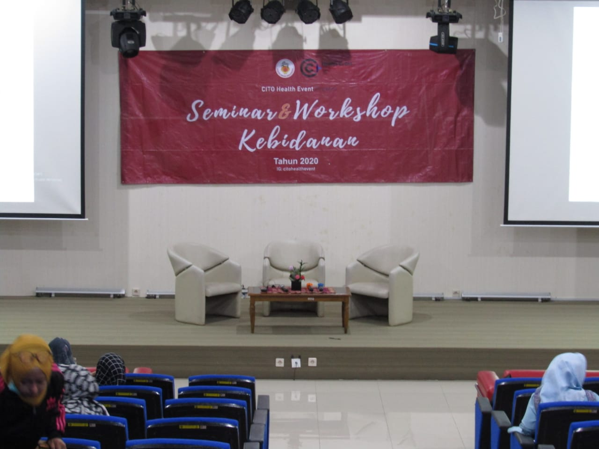
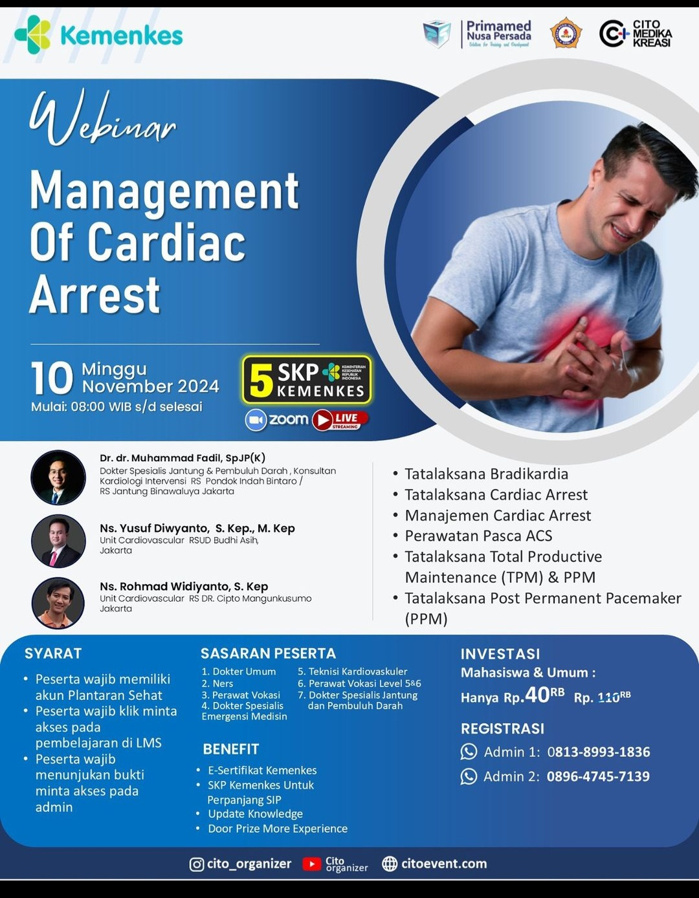
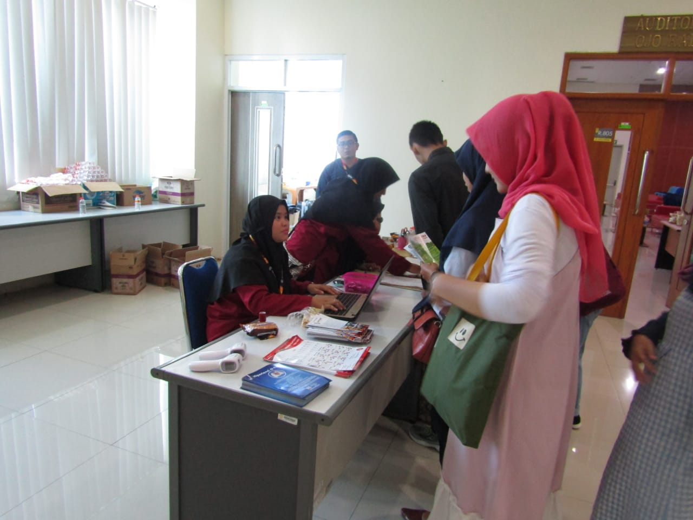

Sejarah

Sejarah Singkat Event Organizer Event organizer atau penyelenggara acara merupakan profesi yang sangat penting dalam dunia bisnis dan hiburan. Profesi ini berkembang seiring dengan meningkatnya kebutuhan akan acara-acara khusus
seperti konferensi, pameran, konser, dan pernikahan.
Maka dari itu kami hadir untuk mempresentasikan acara anda dan membuat seminar.
Event

Seminar adalah sebuah pertemuan formal yang diadakan untuk membahas suatu topik tertentu. Peserta seminar biasanya diajak untuk berdiskusi dan bertukar pikiran tentang topik yang dibahas.
Event secara umum dapat diartikan sebagai sebuah kejadian atau peristiwa yang direncanakan dan disusun secara khusus. Event bisa berupa acara besar maupun kecil, formal maupun informal, dan memiliki tujuan yang beragam.
Galeri
"Cito hadir untuk Anda" adalah sebuah slogan yang sering digunakan oleh berbagai perusahaan atau layanan, terutama di bidang kesehatan. Slogan ini mengandung arti yang sangat sederhana namun mendalam, yaitu sebuah komitmen untuk
memberikan pelayanan yang cepat, tepat, dan sesuai dengan kebutuhan pelanggan. Apa yang dimaksud dengan "Cito"? Kata "cito" berasal dari bahasa Latin yang berarti "cepat". Dalam konteks pelayanan, "cito" merujuk pada kecepatan
dalam merespons permintaan atau kebutuhan pelanggan
Workshop

tentu, mari kita bahas lebih dalam mengenai workshop yang diselenggarakan oleh Cito Media Kreasi. Workshop Cito Media Kreasi: Menggali Potensi Kreativitas Anda Workshop yang diadakan oleh Cito Media Kreasi kemungkinan besar
akan fokus pada pengembangan keterampilan di bidang media kreatif. Mengingat nama "Cito" yang mengacu pada kecepatan dan kreativitas, workshop ini bisa jadi menawarkan berbagai topik menarik
Seminar

Seminar Cito Media Kreasi: Mari Jelajahi Dunia Kreatif Bersama! Seminar Cito Media Kreasi kemungkinan besar akan menjadi ajang yang sangat menarik bagi para pelaku industri kreatif, desainer, content creator, dan siapa saja
yang ingin mengembangkan kemampuannya di bidang media digital. Dengan mengusung semangat "cito" yang berarti cepat, seminar ini menjanjikan pengalaman belajar yang efektif dan menyenangkan.